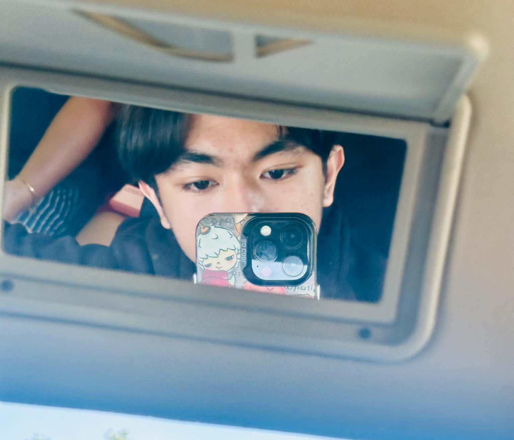

2026 — PRESENT CURRENT
Aklan State University
Kalibo Campus
Bachelor of Science in Information Technology
Major in Software Engineering · First year
CYBERSECURITY / SOFTWARE ENGINEERING
~ / patoo404
Hey, I'm Rance Ashriel R. Sabino.
A first-year IT student at Aklan State University, Kalibo Campus, exploring cybersecurity and building with purpose.

01 / ABOUT ME
I'm a first-year Bachelor of Science in Information Technology student majoring in Software Engineering at Aklan State University, Kalibo Campus.
My focus is cybersecurity: understanding how systems work, exploring ethical hacking, and learning the thinking behind red-team techniques. Along the way, I'm building my foundations in software development.
$ whoami
$ cat focus.txt
$ echo $APPROACH
$
02 / TECH STACK
The tools, languages, and platforms
in my learning journey.
03 / FEATURED PROJECTS
A space for the things I build
and the lessons I document.
04 / EDUCATION
One chapter at a time.
Kalibo Campus
Bachelor of Science in Information Technology
Major in Software Engineering · First year
Senior High School
Information and Communications Technology (ICT)
Junior High School
05 / GET IN TOUCH
Have a project, an idea, or a shared interest in cybersecurity?
Find me around the internet.